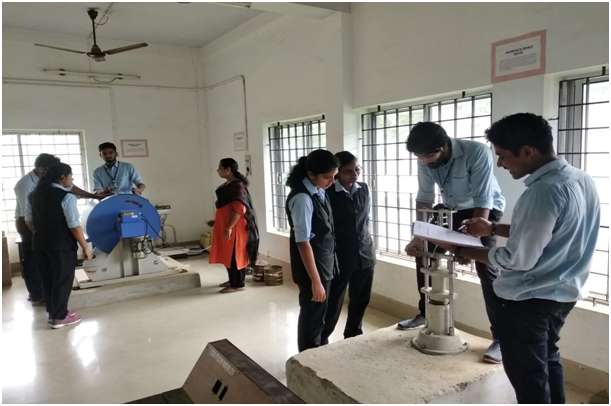
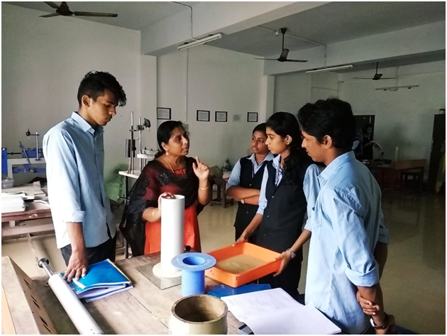
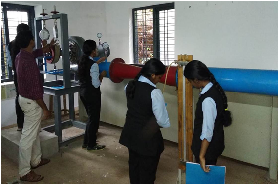
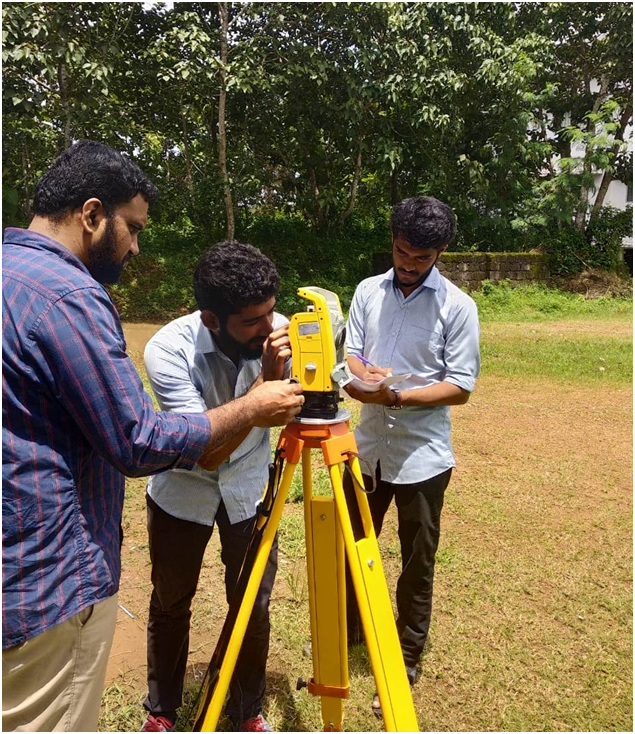
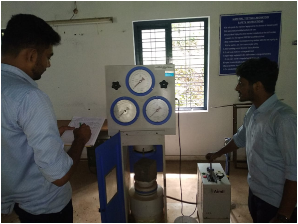
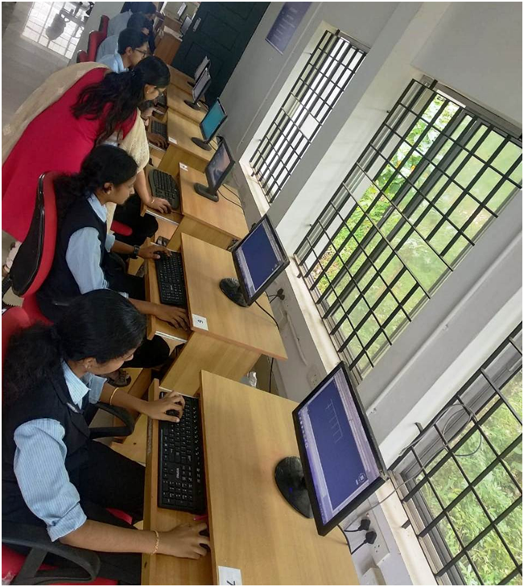
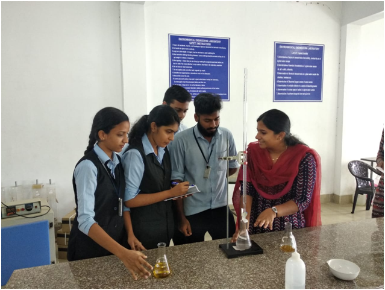

Lab Facilities
1.TRANSPORTATION ENGINEERING LABORATORY

The Transportation Engineering Laboratory
is equipped with facilities for testing of Aggregates and Bitumen.
The Laboratory is fully equipped for conduct regular experiments at
UG level, consultancy works and research activities.
The laboratory is facilitated with ring and ball apparatus,
Aggregate impact testing machine,
shape test apparatus, ductility testing machine, Standard
tar viscometer, Los Angeles Abrasion testing machine, Flash
and fire point apparatus, Universal penetrometer, Marshall
stability apparatus etc.
2.GEO-TECHNICAL ENGINEERING LABORATORY

It is well equipped with instruments
and machineries for conducting laboratory tests and undergraduate
students are being encouraged to do research in the field of
geotechnical engineering by making use of facilities available.
The equipments in the geotechnical
lab is used to determine the physical properties, strength,
compressibility and permeability of soil.
The laboratory is equipped with
Field density testing apparatus, Permeability testing apparatus,
CBR testing apparatus, Consolidation testing apparatus,
Direct shear test apparatus, Atterberg Limits testing apparatus,
Soil Hydrometer , proctor compaction testing apparatus etc.
Consultancy work from the government,
semi government and private agencies are undertaken.
Soil investigation for various projects in Kottayam district
is conducted in Geotechnical Engineering lab
3.FLUID MECHANICS AND HYDRAULIC MACHINES LAB

The activities in this laboratory are
focused on the physical understanding, modeling and manipulation
of flows and their instabilities.
The main objective of this
laboratory is that, student should be able to verify
the principles studied in theory by conducting the experiments.
The laboratory is facilitated with
pipe friction apparatus, Bernoullis apparatus, Pelton turbine,
Francis turbine, Venturimeter and orifice meter, Keplan turbine ,
notch apparatus etc.
4.SURVEY LAB

Here practical lessons on surveying
theory are provided. Starting from the old metric chains to
latest total station are provided in the lab. The various
instruments/equipments include plane table, automatic level,
prismatic compass, theodolite,electronic theodolite,GPS ,
Total Station etc.
5.MATERIALS TESTING LAB

This lab is well equipped for
testing structural materials including steel, timber,
concrete etc., and has a 40 T UTM, 100 T and 200 T
compression testing machine, Double shear test apparatus,
Impact testing machine, tortion testing machine etc.
Standard tests are routinely performed for Government and
Private Organizations.
6.CONCRETE LAB
This lab provides facilities for
various tests for cement and concrete which includes test
for compressive strength, flexural strength, fineness,
and mix design of concrete etc
This laboratory is actively
involved in consultancy work for various Government and
Non government organizations.
The laboratory is facilitated with
hot air oven, Vicat apparatus etc.
7.COMPUTER AIDED DESIGN LAB

A well-equipped computer lab with
advanced facilities is established for the benefit of the
Civil Engineering students. Advanced Civil Engineering
softwares are procured for making the students globally
competitive and industry ready. At CAD lab, students get
professional training on AutoCAD software, STAAD and PRIMEVERA.
Here students will gain the knowledge of design, drafting and
project management needed for Civil Engineering graduates.
8.ENVIRONMENTAL ENGINEERING LAB

This lab is mainly intended for
qualitative and quantitative analysis of the characteristics
of water and waste water. Laboratory is well equipped to
conduct experimental studies in U G program as well as to
encourage students to do research in the field of Environmental
Engineering
The laboratory is facilitated
with hot air oven, Jar test apparatus, Distillation
unit, Muffle furnace, pH meter, turbidimeter, water bath,
Potable water quality analiser etc.
9.NON DESTRUCTIVE TESTING LABORATORY
Non-destructive testing (NDT)
is the process of inspecting, testing, or evaluating materials,
components or assemblies for discontinuities, or differences in
characteristics without destroying the serviceability of the
part or system. In other words, when the inspection or test
is completed the part can still be used.
The laboratory is facilitated
with Anemometer, Ultrasonic Pulse velocity meter,
Rebound hammer, Penetrometer, Hygrometer, Lux meter ,
Digital thermometer etc.
10.BASIC CIVIL ENGINEERING WORKSHOP
This lab is intended to conduct
the practical sessions of the first year B-Tech students.
Training sessions like Setting out of building, Area and Volume
calculation of building and building components, making of
brick bonds and basics surveying using levelling instruments
are conducted by using this lab facility.